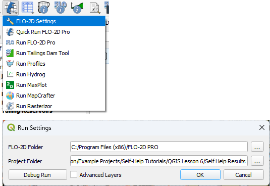
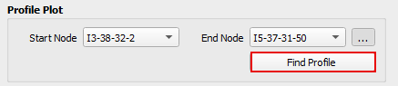
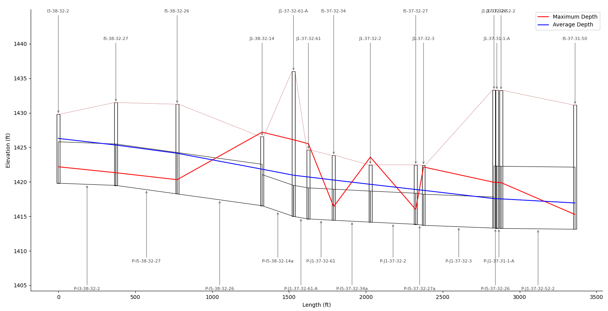

Profile Plot Group
The profile plot tool displays the profile of the node and link system. This tool uses a python module called swimmio. It is a very powerful module for building storm drain inp data using python based programs. So far, the FLO-2D plugin only uses swmmio for plotting data and results.

The storm drain profile tool has some dependencies that need to be installed before it’s first use. Click the Plot profile button to see the dependencies dialog.
Connect to a swmm.inp file
The swmmio module reads data from the swmm.inp and swmm.rpt files. Use the Run Settings to connect to a folder that has an exported swmm.inp or a completed storm drain simulation.
Install SWMMIO
Try the automatic python module installer first. This method may not work if the user does not have Admin Rights. The automatic method will likely require the user to restart QGIS and reload the project but this is a one time installation and swmmio will work for all future projects.

If the Automatic method does not work, get assistance from an IT and perform the manual installation instructions using ADMIN Rights.

Run OSGeo4W Shell as admin
Type this command: pip install swmmio==0.6.11
Wait for the install to finish. It may be necessary to restart QGIS.
For more information, access https://flo-2d.com/contact/
Create a plot
Once swmmio is installed, a plot of the storm drain link node system can be made.
Click the FLO-2D Info button.
Click on the upstream node.
Select the node and then select Start Node.

Click on the downstream node.
Select the node and then select End Node.
Click Find Profile to plot the connected nodes.
A missing swmm.inp message may appear.
If this happens, reconnect the path to the results folder.
Profile Plot
The profile plot will appear in a new window that has zoom and pan controls.
Zoom in on any portion of the graph and pan left or right to change the view.